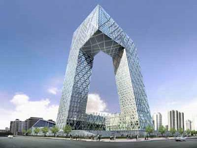
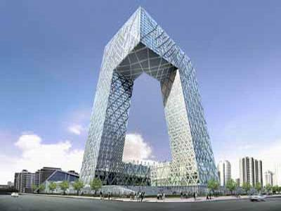

Contents
History
“空间大数据挖掘与可视化”学术研讨会12月14日举行
2014年12月14日，国际数据挖掘大会（IEEE International Conference on Data Mining, ICDM 2014）在深圳洲际酒店召开。国际数据挖掘大会，简称ICDM，是国际公认的在数据挖掘领域一流的研究会议。会议涵盖了包括算法、软件和系统、应用程序等各方面的数据挖掘。它为各国研究人员提供了一个交流技术经验和展示科研成果的平台。
空间大数据挖掘与可视化学术研讨会（ISPRS WGII/7 & ACM SIGSPATIAL China Joint Workshop on Spatial Big Data Mining and Visualization 2014）吸引了来自中国科学院、中科大、中山大学、武汉大学、深圳大学、田纳西大学和墨尔本大学等多所科研院所的数十位学者前来参加。研讨会主页见：http://spatial.szu.edu.cn/SBDMV2014.htm。

研讨会上半场由ACM SIGSPATIAL CHINA主席、微软研究院谢幸博士主持，ACM SIGSPATIAL CHINA荣誉主席、深圳大学校长李清泉教授致欢迎词，腾讯科技有限公司社交网络事业部SNG的贺鹏做了题为《Tencent Location based Social Network Analysis and Applications》的特邀报告。下半场由深圳大学乐阳副教授主持，北京大学袁晓如教授做了题为《Urban Big Data Visualization》的特邀报告。两场精彩报告都得到各位与会专家及学者的积极回应，引发了大家热烈的讨论。实验室常晓猛博士还做了题为《Mapping the distribution of economic activity using large-scale human sensing data》的报告，介绍了一种基于社交感知大数据对中国经济水平模拟的方法，对传统基于灯光反演社会经济发展水平的方法进行了对比分析，得到专家广泛认可。

下午于深圳大学继续召开了“The 1st Workshop of Melbourne-China Big Data Research Network”，来自墨尔本大学、清华大学、人民大学及微软亚洲研究等高校和研究院所各相关领域的专家和学者积极发言、热烈讨论。

(撰稿人 : admin)
21st Jan, 2015